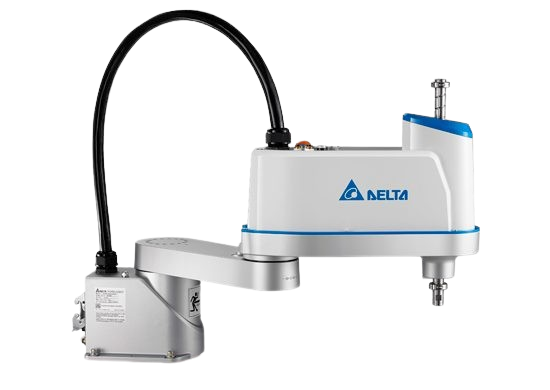

Robô industrial • 4 eixos
Robô SCARA
Robô com braços paralelos, muito utilizado para movimentos rápidos no plano horizontal.

Conceito
SCARA é a sigla para Selective Compliance Assembly Robot Arm, caracterizado por sua alta velocidade e precisão em aplicações industriais. Esse tipo de robô possui rigidez no eixo vertical e flexibilidade no plano horizontal, permitindo executar tarefas repetitivas com grande eficiência.
Princípio de funcionamento
O robô SCARA utiliza dois braços rotativos que atuam no plano horizontal, enquanto um eixo vertical realiza movimentos de subida e descida. Dependendo do modelo, pode haver também rotação da ferramenta. Essa combinação permite movimentos rápidos e precisos, especialmente em tarefas de montagem.
Principais características técnicas
- Alta velocidade de operação
- Boa precisão de posicionamento
- Estrutura compacta
- Rigidez no eixo vertical
- Ideal para cargas leves e médias
Vantagens
- Alta produtividade em linhas de montagem
- Movimentos rápidos e repetitivos
- Boa relação custo-benefício
- Fácil integração em sistemas automatizados
Desvantagens
- Alcance limitado comparado a outros robôs
- Menor flexibilidade espacial
- Não indicado para cargas muito pesadas
Aplicações industriais
Os robôs SCARA são amplamente utilizados em montagem eletrônica, parafusamento, embalagem, pick and place, manipulação de peças pequenas e inspeção de qualidade, principalmente em linhas de produção automatizadas.
Integração com IoT
Podem ser integrados a sistemas de Indústria 4.0 para monitoramento em tempo real, coleta de dados de produção, análise de desempenho e manutenção preditiva, aumentando a eficiência e reduzindo falhas no processo.